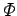
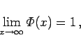
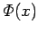
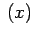
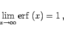
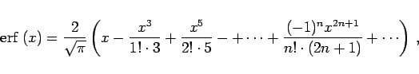
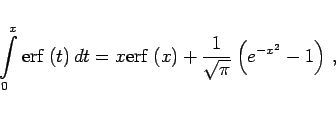
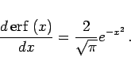

Inhalt Index DeskTop Bronstein

 Integralrechnung Bestimmte Integrale Integration durch Reihenentwicklung, spezielle nichtelementare Funktionen
Integralrechnung Bestimmte Integrale Integration durch Reihenentwicklung, spezielle nichtelementare Funktionen


Das GAUSSsche Fehlerintegral wird mit  bezeichnet. Es gelten die folgenden Definitionen und Beziehungen:
|  | (8.99b) |
Die Funktion  ist die Verteilungsfunktion der normierten Normalverteilung und liegt tabelliert als Tabelle ,,Normierte Normalverteilung`` vor.
Die in der Statistik häufig verwendete Fehlerfunktion erf, auch Error-Funktion genannt, steht mit dem GAUSSschen Fehlerintegral in einem engen Zusammenhang:
|  | (8.100b) |
|  | (8.100c) |
|  | (8.100d) |
|  | (8.100e) |